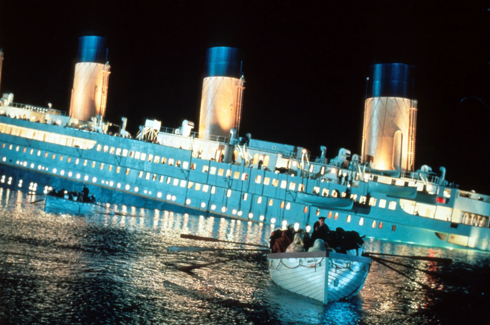

Jack,Rose et James sur la proue du Titanic

Moment de détente et d'humour entre Jack Rose

La construction de la maquette géante

James Cameron dans la salle à manger du Titanic, envahie par l'eau

Photo prise durant le tournage de l'émouvante scène finale du film